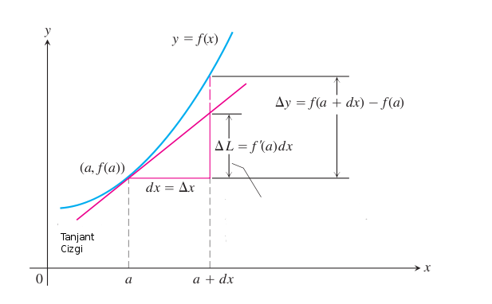

Tam Diferansiyel (Total Differential)
Bir $f$ fonksiyonunun tam diferansiyeli (total differential) o fonksiyonun lineerleştirilmesi anlamına gelir. İki değişkenli bir fonksiyon için şöyle temsil edilir:
$$ df = f_x(x_0, y_0)dx + f_y(x_0,y_0)dy $$
Bu formu nasıl türetiriz? Bize lazım olan lineerleştirme formülasyonu. Tek değişkenli bir fonksiyonu lineerleştirmenin tekniği şudur:
$$ L(x) = f(x_0) + f'(x_0) \Delta x $$
Burada $L(x)$ gerçek fonksiyonu yaklaşıksal (approximate) olarak temsil eden lineer fonksiyondur.

Bu fonksiyonu genişleterek iki değişkenli hale getirelim (sadece $y$ ekleyeceğiz)
$$ L(x,y) = f(x_0,y) + f_x(x_0,y) \Delta x $$
Bu fonksiyon da bir önceki kadar "geçerli". Sonuçta fonksiyonlar noktasal değerlere göre sonuç verirler, bu sebeple bir lineerleştirme işlemi 2 boyutlu ortamda herhangi bir $x$ noktasında yapılabildiği gibi, herhangi bir $x$, $y$ noktasında da yapılabilir.
Şimdi üstteki denklemin sağ tarafında yer alan $f(x_0,y)$'yi lineerleştirelim.
$$ L(x,y) = L(x_0,y_0) + f_y(x_0,y_0) \Delta y + f_x(x_0,y_0) \Delta x $$
Artık $L(x_0,y_0)$'yi sol tarafa taşıyabiliriz:
$$ \Delta L = L(x,y) - L(x_0,y_0) = f_y(x_0,y_0) \Delta y + f_x(x_0,y_0) \Delta x $$
$\Delta L$ yani $df$ istediğimiz tam diferensiyel sonucudur, $\Delta x$ yerine $dx$, $\Delta y$ yerine $dy$ kullanabiliriz, o zaman baştaki formun aynısını elde etmiş oluruz.
Türetirken kullandığımız numarayı üç, dört, vs. gibi istediğimiz kadar değişken taşıyan $f$ fonksiyonları için yapabilirdik, ve sonuç üstteki forma benzer olurdu. Her değişkenin kısmi türevi o değişkenin sonsuz ufaklıktaki "değişimi" ile çarpılıp, o çarpımlar toplanınca elimize tam diferansiyel geçiyor.
Bu yazı [1, sf. 130], [1, sf. 347], [1, sf. 358], ve [1, sf. 257]'yi baz almıştır. Diğer kaynaklar altta.
Kaynaklar
[1] Thomas, Thomas Calculus 11th Edition
Yukarı